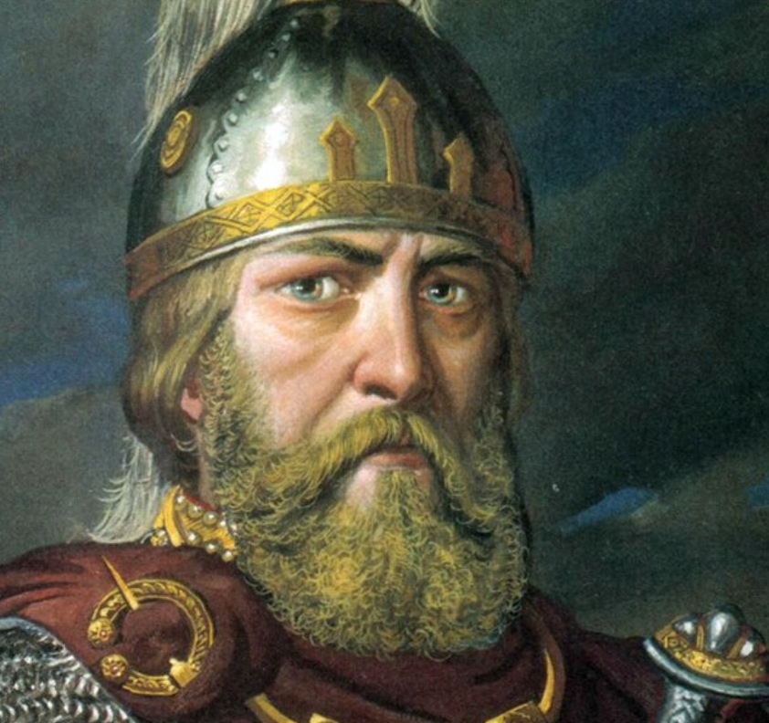

Рюриковичи
История первой династии
История династии началась одновременно с историей государства. Рюриковичи - первая великокняжная, а затем и царская династия в России. Рюриковичи правили больше семи веков. Основателем династии является Рюрик. Последний из Рюриковичей - Федор Иоаннович. Рюрикович укрепляли, обороняли, расширяли свое государство: кто-то - огнем и мечом, кто-то -миром и договором. Во время их правления сформировалась русская нация и возник феномен русской культуры.


Рюрик. Князь Новгородский.
Годы правления: 862—879
Преемник: Олег Вещий
Наследник: Игорь Рюрикович